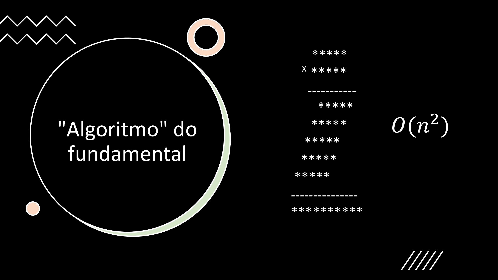
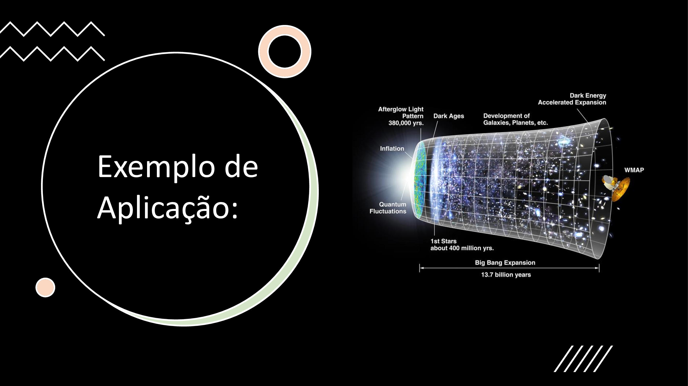
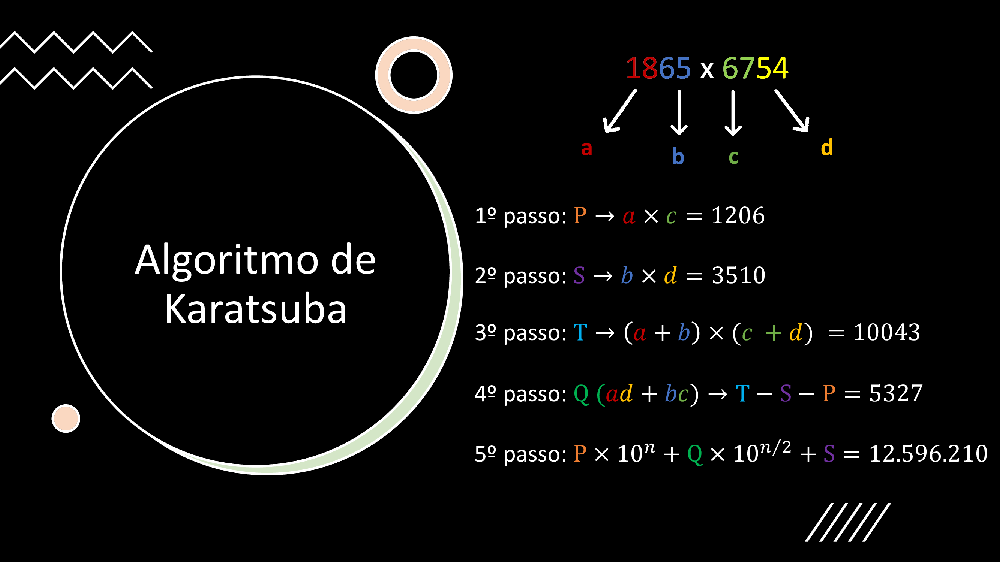
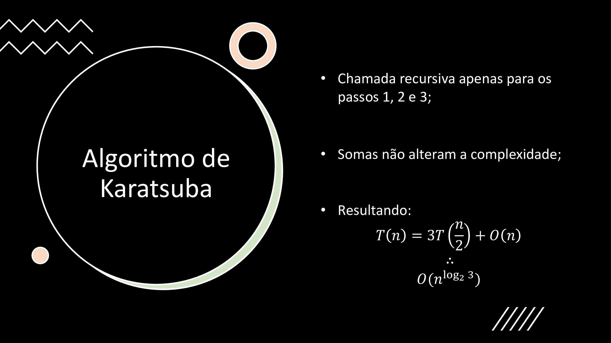
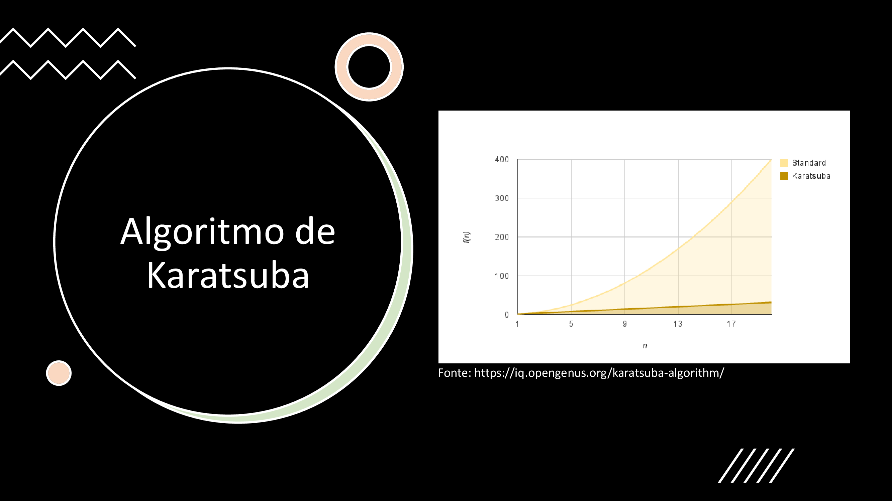
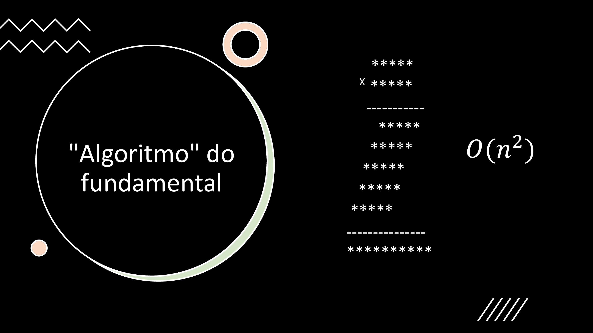
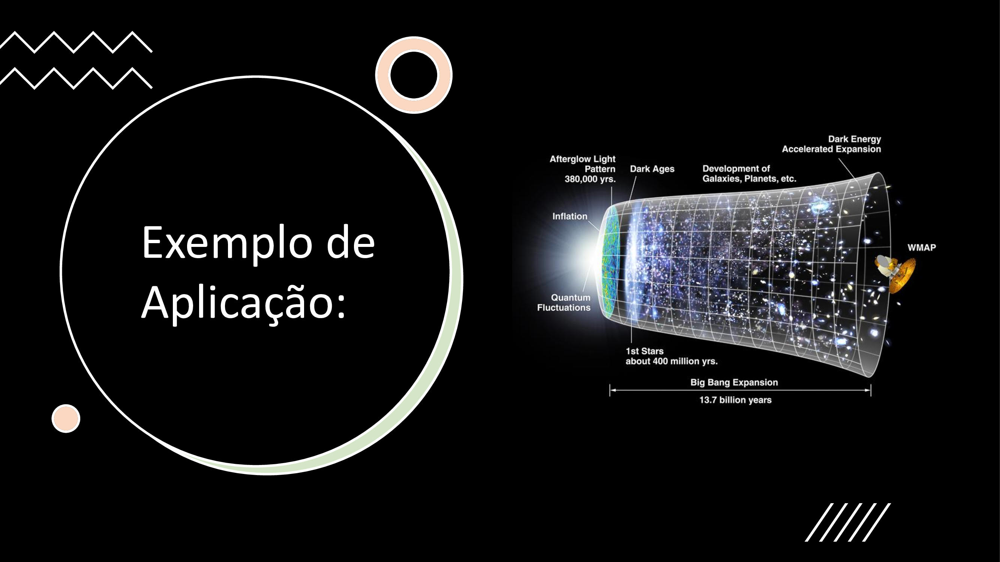
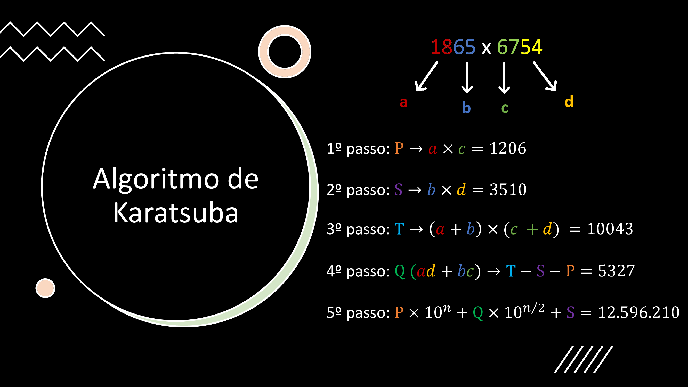
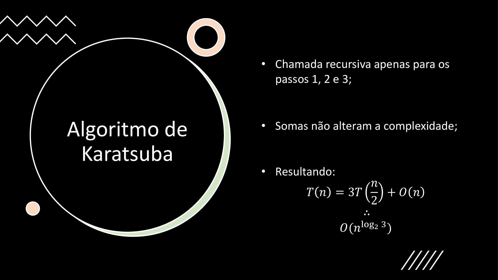
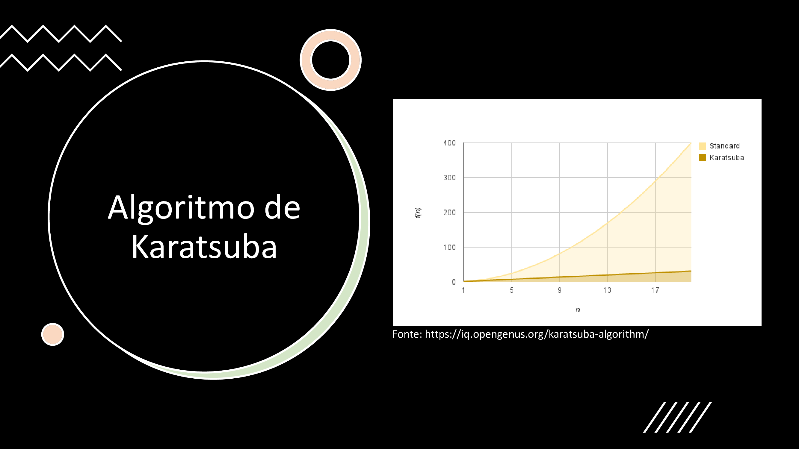

Para entender o Algoritmo de Karatsuba, o jeito mais simples é fazendo as contas na mão e verificando se o resultado bate com o esperado.
Pegue uma calculadora e vamos lá, começaremos com algo simples.
Exercício 1
Primeiro, faça a seguinte multiplicalção: \(3408 \times 1735 = \,?\)
Gabarito
Você deve ter chegado em \(5.912.880\), se não, tem algo de errado com a sua calculadora…
Maravilha, agora anote esse resultado em algum lugar para fazermos o algoritimo.
Karatsuba 1
A primeira coisa a se fazer é dividir os números \(3408 \text{ e } 1735\) em duas partes iguais
Primeiro número em \(a \text{ e } b\);
Segundo número em \(c \text{ e } d\).
Gabarito
\(a = 34\)
\(b = 08\)
\(c = 17\)
\(d = 35\)
Fazemos isso para podermos simplificar as chamadas nos próximos passos.
Karatsuba 2
Agora, calcule \(P \text{ e } S\), que são respectivamente: \(a \times c \; \; e \; \; b \times d\);
Gabarito
\(P: \; 34 \times 17 = \; 578\)
\(S: \; 08 \times 35 = \; 280\)
Note que multiplicamos as partes maiores entre si, e o mesmo é feito com as partes menores, isso não é em vão, o motivo pelo qual isso é feito ficará mais claro logo logo.
Agora, o nós teriamos que calcular \((ad + bc)\), porém, isso não parece muito viável, visto que adicionaria mais duas multiplicações para o nosso algoritimo. Portanto, usaremos utilizaremos um pequeno truque para nos ajudar.
O truque é o seguinte, iremos subtrair os termos \(P\text{ e }S\) de \(T\). Fazemos isso para trabalharmos apenas com subtrações.
Karatsuba 4
Faça o cálculo: \(\; T - S - P\) e chame o resultado de \(Q\).
Gabarito
\(Q \,\): \(\; T - S - P = \; 1326\)
A razão desse truque funcionar é que \(T = ac + ad + bc + bd \text{ e } P=ac \text{, } S=bd\) e quanto fazemos a subtração, isso nos deixa apenas com os termos \((ad + bc)\) desejados. Coisa de doido, né?
Calma lá que já estamos no fim, nesse último passo tudo ficará mais claro!
Karatsuba 5
Realize a seguinte equação e verifique se os resultados batem.
Você deve ter chegado em:
\[R: \; 578 \times 10^4 + 1326 \times 10^{4/2} + 280 = \; 5.912.880\]
O motivo de multiplicarmos \(P\text{ por } 10^n\) é para deslocarmos o número para seu local ideal, o mesmo é feito com \(Q\times 10^{n/2}\).
Agora você deve estar pensando “esse método é inútil… faço muito mais rápido na calculadora”, mas não é exatamente assim que seu computador pensa! Antes de entender porque o algoritmo de karatsuba é mais rápido no computador precisamos analisar como ele seria construido em código.
Veja o pseudocódigo a seguir e analise-o:
def karatsuba(num1, num2):
# Retorna a multiplicação caso o n seja menor que 1
if (num1 < 10) or (num2 < 10)
return num1 × num2
# Calcula o tamanho dos números.
n = min(size_base10(num1), size_base10(num2))
# Pega o menor número de algarismos e divide por 2
n2 = floor(n / 2)
# Separa os números em duas partes.
a, b = split_at(num1, n2)
c, d = split_at(num2, n2)
# 3 chamas recursivas feitas para números de aproximadamente metade do tamanho (n/2).
S = karatsuba(b, d)
Q = karatsuba((b + a), (d + c))
P = karatsuba(a, c)
return (P × 10**(n2 × 2)) + ((Q - P - S) × 10**n2) + S
“Tá… continuo achando esse processo todo inútil, olha quanta linha pra fazer uma multiplicação comum!”. Realmente ainda parece improvável que esse método seja mais rápido que uma multiplicação comum, mas não vá tirando conclusões precipitadas, ainda nem calculamos a complexidade do algoritimo!
Exercício
Vamos calcular a complexidade do algoritmo de karatsuba, lembra como faz?
Dica
São três chamadas recursivas que recebem \(\frac{n}{2}\) como parâmetro.
Gabarito
\[f(n) =
\begin{cases}
1 & \quad \text{se } n \leq 1\text{;}\\
3f(n/2) + n & \quad \text{se } n > 1\text{.}\
\end{cases}
\]
 
